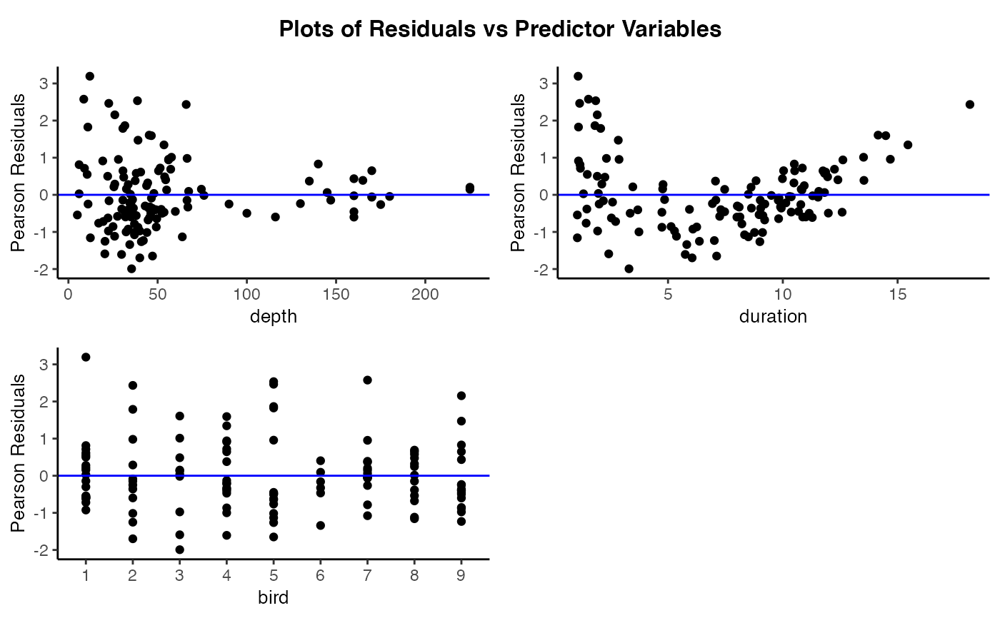
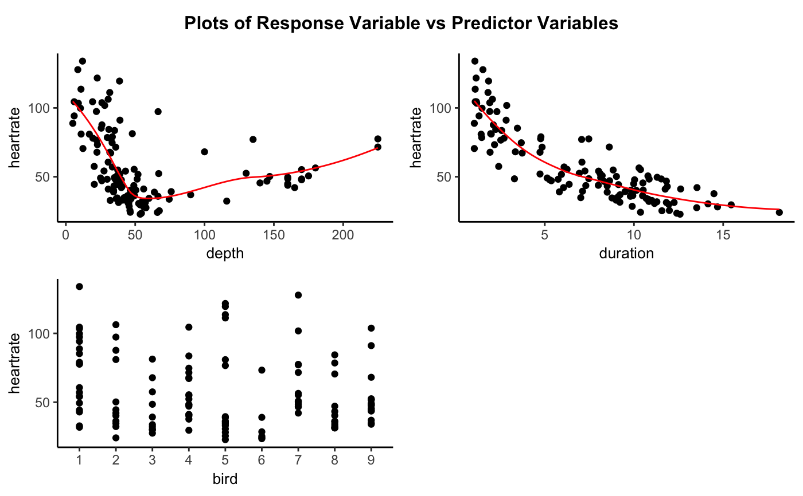

resid_xpanel.RdCreates a panel of plots of the residuals or response variable versus the predictor (x) variables in the model. Interactions between predictor variables are not included. Currently accepts models of type "lm", "glm", "lmerMod", "lmerModLmerTest", "lme", and "glmerMod".
resid_xpanel(
model,
yvar = "residual",
type = NA,
smoother = FALSE,
scale = 1,
theme = "bw",
axis.text.size = 10,
title.text.size = 12,
title.opt = TRUE,
nrow = NULL
)Model fit using either lm, glm, lmer,
lmerTest, lme, or glmer.
Specifies the variable to put on the y-axis of the plots. Options are "residual" (default) or "response".
Type of residuals to use in the plot. If not specified, the default residual type for each model type is used. (See details for the options available.)
Indicates whether or not to include a smoother on the plots. Specify TRUE or FALSE. Default is set to FALSE.
Scales the size of the graphs in the panel. Takes values in (0,1].
ggplot2 theme to be used. Current options are "bw",
"classic", and "grey" (or "gray"). Default is
"bw".
Specifies the size of the text for the axis labels of all plots in the panel.
Specifies the size of the text for the titles of all plots in the panel.
Indicates whether or not to include a title on the plots in the panel. Specify TRUE or FALSE. Default is set to TRUE.
Sets the number of rows in the panel.
A panel of plots of the residuals or response variable versus the predictor variables.
Note that for x variables that are factors, the levels shown on the x-axis will be in the order that the levels are ordered in the dataframe. This can be adjusted by reordering the levels of the factor before the model is fit.
# Fit a model to the penguin data
penguin_model <- lme4::lmer(heartrate ~ depth + duration + (1|bird), data = penguins)
# Create plots of the residuals versus the predictor variables
resid_xpanel(penguin_model, theme = "classic")

# Create plots of the response variable versus the predictor variables
resid_xpanel(penguin_model, yvar = "response", theme = "classic", smoother = TRUE)
#> `geom_smooth()` using formula 'y ~ x'
#> `geom_smooth()` using formula 'y ~ x'
#> `geom_smooth()` using formula 'y ~ x'
